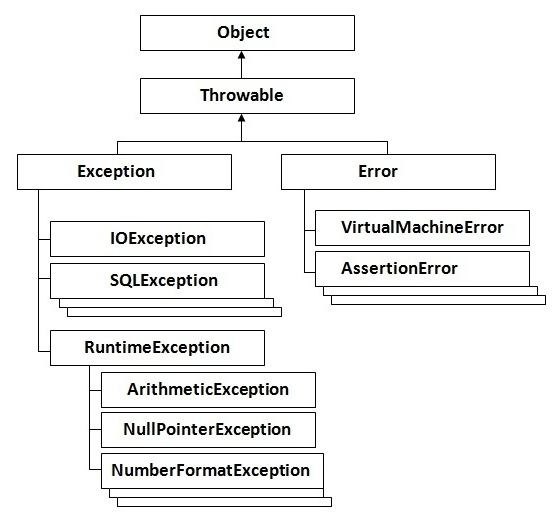

Notes
Table of Contents
1 Java
1.1 Java Basics
1.1.1 About Java
- Platform
- Any hardware or software environment in which a program runs is known as a platform. Java is also a platform since it has its own runtime environment and API.
- Types of Java applications
- Standalone application: aka desktop or window based application; need to be installed on every machine.
- Web application: an application that runs on the server side and creates dynamic page.
- Enterprise application: is distributed in nature, such as banking applications.
- Mobile application.
- JVM (Java Virtual Machine)
- JVM is a specification of an abstract machine that provides runtime environment in which Java bytecode can be executed.
- JRE (Java Runtime Environment)
- JRE is the implementation of JVM and it provides runtime environment. JRE = JVM + libraries etc.
- JDK (Java Development Kit)
- JDK = JRE + development tools
1.1.2 Variable
A variable is name of reserved area allocated in memory.
1.1.3 Three types of variables
- local variable: declared inside a method.
- instance variable: declared inside a class but outside the method.
- static variable: declared as static; cannot be local.
1.1.4 Data types
1.1.5 What happens at runtime
- Class file
- Classloader: a subsystem of JRE that dynamically loads classes into JVM.
- Bytecode verifier: the verifier checks that the instructions cannot perform actions that are obviously damaging.
- Interpreter
- Runtime
- Hardware
1.1.6 Comparison with C++
- Call by value only.
- No multiple inheritance
- No virtual keyword (all non-static methods are virtual by default)
- Supports unsigned right shift
>>>(padding zero for negative numbers) - Single inheritance tree; all classes are children of
Object - All values get initialized.
1.1.7 Some keywords
strictfp: restricts floating-point calculations to ensure portability.
1.2 Object Oriented Java
1.2.1 Inheritance
- Whenever you create the instance of subclass, an instance of parent class is created implicitly (
super)
1.2.2 Static keyword
static is used for memory management mainly.
- Static variable can be used to refer the common property of all objects and get memory only once in class area.
- Static method belongs to the class rather than an object. We cannot override static methods.
- Static block is executed in class loader
public class Main { public static void main(String[] args) { System.out.println("main"); } static{System.out.println("Called in class loading, before main()");} }
1.2.3 Instance Initializer block
class SuperClass{ SuperClass(){ System.out.println("super() called first"); } } class SubClass extends SuperClass{ SubClass(){ System.out.println("Constructor of subclass called after initializer block"); } { System.out.println("Initializer block called after super()"); } }
1.2.4 Final keyword
The final keyword is used to restrict users.
- final variable is constant and can be initialized directly or in constructor only.
class Student{ public final String name; Student(String name){ this.name = name; } static public final String school; static { school = "No.1 middle school"; } }
- final method cannot be overridden
- final class cannot be extended
- final parameter of a function is constant
1.2.5 Runtime polymorphism, or Dynamic method dispatch
- A call to an overridden method is resolved at runtime rather than compile time.
- Note that rumtime polymorphism cannot be achieved by data members.
public class A { public static void main(String[] args){ // Call subclass method even after up casting Animal cat = new Cat(); Animal dog = new Dog(); cat.makeSound(); dog.makeSound(); } } class Animal { void makeSound(){ System.out.println("animal sound"); } } class Cat extends Animal { void makeSound(){ System.out.println("meow"); } } class Dog extends Animal { void makeSound(){ System.out.println("bark"); } }
1.2.6 Static binding and dynamic binding
- Binding: connecting a method call to the method body
- Static (early) binding: type of the object is determined at compile time by the compiler
public class A { public static void main(String[] args){ // Call subclass method even after up casting dynamicBinding(new Cat()); dynamicBinding(new Dog()); } static void dynamicBinding(Animal a){ a.makeSound(); } } class Animal { void makeSound(){ System.out.println("animal sound"); } } class Cat extends Animal { void makeSound(){ System.out.println("meow"); } } class Dog extends Animal { void makeSound(){ System.out.println("bark"); } }
1.2.7 instanceof, type comparison
instanceofcompares an instance with a type, and return true if the instance if of the type or can be cast to the type.- Before down casting, check the possibility using
instanceof
1.2.8 Abstraction
- Abstraction means hiding the implementation details and showing only functionality to users
1.2.9 Interface
- An interface is a blueprint of a class
- Interface fields are
public static finalby default. - Interface methods are
public abstractby default. - A Java class can implement multiple interfaces
- An interface with no number is known as marker or tagger interface, such as Serializable, Cloneable etc
1.3 Data Structures
1.3.1 Array
Array is fixed size in Java
int a[] = new int[5]; int b[] = {1,2,3};
1.3.2 Wrapper classes
- Wrapper class in Java provides the mechanism to convert primitive (
int) into object (Integer) and object into primitive. - Autoboxing and unboxing: the automatic conversion of primitive into objects and vise versa
- All the wrapper classes are immutable (immutable does not mean constant).
1.3.3 String
- Java
Stringis likechar[], a sequence of char. java.lang.String implements Serializable, Comparable and CharSequence- Java
Stringis immutable.StringBufferis the same asStringexcept for that it is mutable.
1.4 Exception
1.4.1 Hierarchy of Java Exception classes

1.4.2 Types of exceptions
- Checked exception: the classes that extend
ThrowableexceptRuntimeExceptionandError, such atIOException,SQLException - Unchecked exception: the classes that extend
RuntimeException, such asNullPointerException,ArrayIndexOutOfBoundsException,ArithmeticException. Unchecked exceptions usually mean the programmer made some mistakes. - Error: error is irrecoverable, such as
OutOfMemoryError,AssertionError,VirtualMachineError
1.4.3 Multiple catch
- At a time only one Exception is occurred and one catch block is executed
- All catch blocks must be ordered from most specific to most general
fianllyblock is always executed and used for important code such as closing connection
1.4.4 Declaring Exception in overriding a method
- If the parent method declares no exception, then the overriding method can only declare unchecked exception.
- If the parent method declares an exception, then the overriding method cannot declare a super-class exception.
1.5 Nested Classes
1.5.1 Inner class: non-static nested class
- Member inner class: a class created within a class and outside method
In order to instantiate a inner class, you have to instantiate an outer class.
- Anonymous inner class
Anonymous inner class should be used if you have to override method temporarily.
class B{ void method(){ System.out.println("Old method"); } } public class A { public static void main(String[] args){ B b = new B(){ void method(){ System.out.println("New method"); } }; b.method(); } }
- Local inner class: a class created within a method
1.5.2 Static nested class
public class A { static class B{ void method(){ System.out.println("Static inner class"); } } public static void main(String[] args){ B b = new B(); b.method(); } }
1.5.3 Nested interface
An interface created within class or interface. It is useful to group related interfaces so that they can be easily maintained.
interface Animal{ interface Dog{} } class Puppy implements Animal.Dog{}
1.6 Multithreading in Java
- Thread: a lightweight sub-process, a smallest unit of processing.
- Threads share a common area of memory.
1.7 Garbage Collection
2 C++
2.1 Pitfalls in C++
Here I record some mistakes that are very easy to make in C++.
2.1.1 Overflow and Underflow
- Avoid adding two
intnumber when an easy alternative exists
int mid = (left + right) / 2;
- Avoid decrementing index of
size_ttype.
for(size_t i = 0, j = num.size() - 1; i <= j; ++i, --j){ // If num.size() == 1, then the next step j would underflow }
2.1.2 Implicit cast
inttounsignedA signed number is implicitly cast into unsigned before adding, and it may cause counter-intuitive results:
assert(0U - 1 == -1); assert(0U - 1 > 0);
A common bug could occur when you want to loop through from the first to the second last element of a vector. Since
size()is unsigned, and if the vector is empty, the loop will not be skipped.vector<int> xx; // Empty for(size_t i = 0; i < xx.size() - 1; ++i){ // Loop will not stop until i = 4294967295 } for(size_t i = 0; i + 1 < xx.size(); ++i){ // Loop will be skipped (avoid adding int with unsigned) }
inttoboolintwill be implicitly cast intobool. If you mistakenly type&as&&, then it still compiles but lead to different result.int x = 0x0f, y = 0xf0; assert((x & y) == 0); assert((x && y) == 1);
2.1.3 Vector
- When initializing a nested vector,
{}is NOT the same as{{}}.{}is an empty vector, while{{}}is a size-1 vector containing an empty list. - It is always easy to forget that vector does NOT check index bound. If you are not confident with the index, use
at().
vector<int> xx = {0,1}; try{ cout << xx.at(99); }catch(out_of_range e){ // If out of range, at() will raise exception. }
- C++ does not check iterator bound either. Dereferencing an out-of-range iterator will occur segmentation fault.
- The input range for a STL algorithm is a close-open range (NOT including the later iterator).
xx = {0,1,2,3,4}; vector<int> sub (xx.begin() + 1, xx.begin() + 3); assert(sub == vector<int> ({1,2}));
2.1.4 Char
- In C++ char type is more like integer.
assert( to_string('a') != "a" ); assert( to_string('a') == "97" );
- Char can be used to index an array syntactically, hiding some serious bugs
vector<int> xx = {0, 1, 2, 3}; assert( & xx['1'] != & xx[1] ); assert(string('1', 65) == "AAAAAAAAAAAAAAAAAAAAAAAAAAAAAAAAAAAAAAAAAAAAAAAAA");
2.1.5 Boolean
- Size of
boolis implementation-defined, not specified by the standard. It could be 1 byte instead of 1 bit. - Use
!varto flip aboolvariable.
bool a = false; assert( ~a != true ); assert( !a == true );
2.2 Techniques
2.2.1 Logical operators
- There is no logical XOR operator. Use
a != binstead. Do NOT use bitwise XOR^.
2.2.2 Assertion
- Use assertion to reveal bugs in the code.
- In production, to improve efficiency define
NDEBUGto ignore all assertions.
// #define NDEBUG #include<assert.h> int main(){ assert(true); }
2.3 Causes of Segmentation Fault
- Out-of-range iterator
- Uninitialized pointer
pop()on an empty stack or queue.- Infinite function call stack
2.4 Templates
2.4.1 File IO
#include<iostream> #include<fstream> #include<sstream> #include<vector> using namespace std; template<typename T> ostream & operator<<(ostream & os, vector<T> xx){ for(T x : xx) os << x << " "; return os; } vector<string> split(string input, char delimiter){ stringstream ss (input); string word; vector<string> result; while(getline(ss, word, delimiter)){ result.push_back(word); } return result; } int main(){ // Read file by line ifstream infile ("test.txt"); if(infile.is_open()){ string line; while(getline(infile, line, '\n')){ cout << split(line, ',') << endl; } infile.close(); } // Write file ofstream outfile ("out.txt"); if(outfile.is_open()){ outfile << "Write to file as a stream\n"; } }
2.4.2 Timer
#include<iostream> #include<chrono> #include<vector> typedef std::chrono::high_resolution_clock HRTime; typedef std::chrono::time_point<HRTime> TimePoint; typedef std::chrono::duration<float> FloatSecond; void task(){ std::vector<int> xx (1 << 25, 0); for(int & x : xx) x = rand(); } int main(){ TimePoint t0 = HRTime::now(); task(); TimePoint t1 = HRTime::now(); float duration = ((FloatSecond)(t1 - t0)).count(); std::cout << duration << " second\n"; }
3 Python
3.1 Virtual Environments
3.1.1 virtualenv
virtualenv is a tool to create isolated Python environments.
- Go to a folder, create an virtual environment with
virtualenv -p /usr/bin/python2.7 envname - Activate it:
source envname/bin/activate - Use
pythonorpipas usual (the versions are specified by the virtual environment) - When done,
deactivate
3.1.2 pip
pip freeze > requirements.txtprints out installed packagespip install -r requirements.txtinstall packages as specified in the file.
4 Others
4.1 Emacs
4.1.1 General
- Modifier keys:
- C: Control;
- M: Meta; Alt; Option.
- Cut and paste rectangle region
C-x r k:kill-rectangle, cutC-x r y:yank-rectangle; paste. (be careful with the target lines)
- Search and replace
C-s:isearch-forward; incremental search forwardC-r:isearch-backward; incremental search forward- Repeat
C-sorC-rto move to the next or previous match.
- Moving cursor
CM-n: Move cursor to the next parentheses group.CM-p: Move cursor to the previous parentheses group.
4.1.2 Org-mode
C-ce hh: Export to html fileC-cxl: Toggle latex maskC-c .: Insert current dateC-ct: Change status of a TODO task.C-x ns:org-narrow-to-subtreeC-c c:org-captureC-cl: Edit link address and content
4.1.3 Auctex
- Preview:
C-cpd - Remove preview:
C-cpcd
4.2 Bash
pgrep keywords: grep search by process name
4.3 Software Installation
- Emacs
brew install emacs --HEAD --with-cocoa --with-gnutls --with-imagemagick
If you prefer a stable version, use brew cask install emacs to install from a stable binary release.
- Openmp
- The
gccthat comes with Mac OS does not contain OpenMP, so we need to reinstall it:brew reinstall gcc --without-multilibThen use the newly installedg++-6or other later version. - Save password for ssh
ssh-keygen brew install ssh-copy-id ssh-copy-id user@hostname